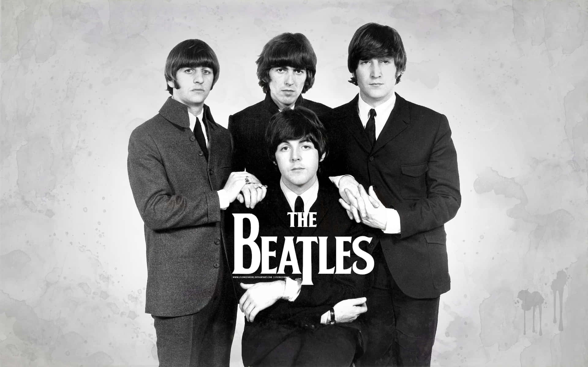

Origens do Rock
O rock and roll surgiu nos Estados Unidos na década de 1950, com raízes no blues, rhythm and blues e country music.
O Rock nos anos 50 e 60
Nos anos 50 e 60, o rock passou por diversas mudanças e evoluções
O Rock nos Anos 70 e 80
Nos anos 70 e 80, o rock se tornou mais diversificado e experimental
O Rock nos Anos 90 e 2000
Nos anos 90 e 2000, o rock continuou a se diversificar e novos subgeneros surgiram.

O Rock na Atualidade
O rock continua a ser um gênero popular e influente na música.